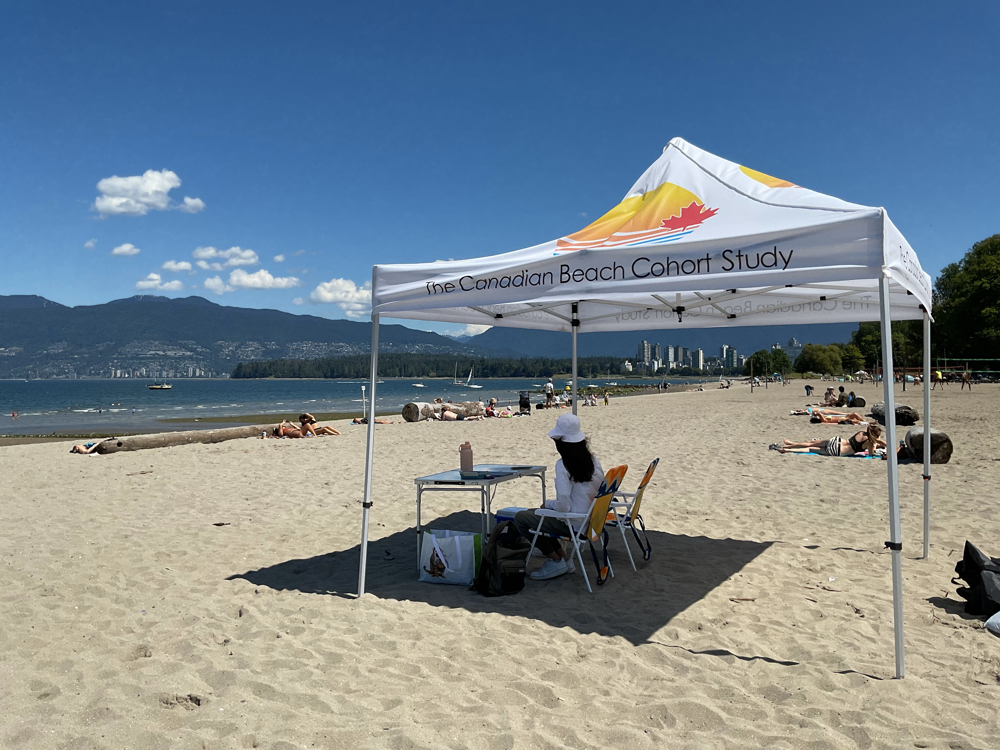

Research
Several recent and ongoing research projects and interests are described below. Please feel free to contact Dr. Young if you are interested in more information about this research.
Beach Water Quality and Recreational Water Illness

Swimming and other recreational water activities (e.g., kayaking, water sports) in beach water with high levels of fecal contamination can lead to recreational water illness. E. coli is frequently used as an indicator of fecal contamination of beach water. We are evaluating the environmental and weather-related impacts of E. coli in beach water across Canada through epidemiological modelling. Predictive models, using a Bayesian network framework, are being developed for selected beaches to assist public health and environmental authorities in their decisions about when to post beaches as potentially unsafe for swimming. Beach cohort studies are being conducted in Canada to evaluate water and sand exposures and the risk of recreational water illness among beachgoers. Additionally, focus groups are being conducted to evaluate beachgoer risk perceptions and behaviours toward beach water quality. Read more about these research activities here.
Beach Water Quality and Harmful Algal Blooms

Recreational water contact at beaches that are affected by blue-green algae blooms (i.e., cyanobacterial blooms) can also lead to an increased risk of recreational water illness. Many species of blue-green algae can produce toxins, called cyanotoxins, that can cause a wide variety of illnesses and symptoms in people, pets, and wildlife. Blue-green algal blooms are becoming increasingly common in freshwater bodies in Canada, but little is known about the burden of illness from recreational water exposures to the cyanobacteria and their toxins. A multi-year study is currently being conducted at targeted beaches in Ontario and Manitoba to evaluate the risk of illness from water exposures in people and their pet dogs. Additionally, focus groups are being conducted to evaluate the knowledge, awareness, and behaviours of families and dog owners toward blue-green algae in beach water.
Climate Change Impacts on Food Safety and Water Quality
Climate change is expected to increase the number, intensity, scope, and duration of extreme weather events, such as heavy precipitation and flooding, and the average summertime temperatures in Canada in the coming decades. These events increase the likelihood of future power outages and service distributions due to higher electricity demands and weather-related damage. Changing weather patterns and power outages threaten the safety of our food and water supply, increasing the risk of food-borne and water-borne illness. To examine and quantify these risks, epidemiological modelling is being conducted to evaluate the impact of extreme weather events on the incidence of acute gastrointestinal illness in Toronto. Additionally, mixed-methods research is being conducted to evaluate consumers’ food and water safety preparedness toward extreme weather events and power outages.
Safe Food Handling among Consumers
Food-borne illness has a significant public health burden, with an estimated 4 million cases occurring each year in Canada. Most cases of food-borne illness occur due to mishandling of food by consumers at home. Within this research theme, systematic reviews have been conducted to determine the key factors (e.g., knowledge, attitudes, social influences) that drive consumers’ safe food handling practices at home. The group has also conducted primary mixed-methods research to evaluate the determinants of safe food handling practices in different population groups (e.g. young adults, seniors), and the use and influence of food safety information sources (e.g., online recipe blogs and websites) among consumers.
Food Safety in the Food Industry

Improper food handling and storage, cleaning and sanitation, and poor hygiene among food workers and handlers are frequently linked to food contamination, recalls, and outbreaks of food-borne illness. Implementation of good manufacturing practices and hazard analysis critical control point (HACCP) programs is critical to ensure food safety and prevent risks of contamination along the food chain. The research group has conducted primary research and knowledge synthesis studies to identify the key determinants of and interventions to improve the food safety behaviours and practices of food handlers in different settings. The impact of the COVID-19 pandemic on food safety inspection trends in Toronto restaurants was recently investigated. Additionally, research was recently conducted to explore how innovative behaviour change methods can be used to improve food safety outcomes in the ready-to-eat meat processing sector in Ontario.
Swimming Pool Health and Safety

Swimming pools can present different hazards to bathers and staff (e.g., lifeguards), resulting in acute recreational water illness and possible chronic health risks. One of the most common causes of acute illness risks in pools is Cryptosporidium, transmitted through fecal contamination. Another common hazard is chloramines and other disinfection by-products, formed through a reaction of chlorine disinfectant and a build-up of organic matter in the pool water, which can lead to bather irritations. The research group has conducted studies to examine determinants of bather hygienic behaviours to prevent these risks, as well as analyses of common health and safety inspection infractions in swimming pools.
Other Research Areas
This research group has been involved in numerous other projects with collaborators such as the Public Health Agency of Canada, Peel Region Public Health, Toronto Public Health, and other agencies. Some of these projects were completed by undergraduate public health and safety students as part of their final year independent research project course, or by graduate students in the group. Some examples include:
Food safety risks and safe food handling practices at farmers’ markets
The relationship between tick exposures and alpha-gal syndrome (i.e., meat allergy)
The microbial quality of high-risk foods prepared and sold at retail and food service settings, such as steak tartare and other raw meat dishes
The epidemiology, etiology, and control of enteric pathogens (e.g., Hepatitis E virus, Salmonella)
Food allergen management at restaurants and food service settings
Research Funding Sources
Current and previous research funding has been provided by the following agencies: